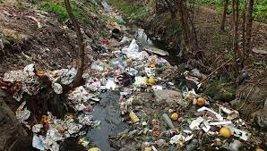
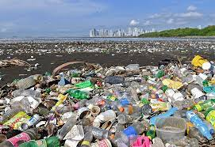

El planeta nos recuerda continuamente, con sequías cada vez más extremas, que sin agua no hay vida.
Este recurso es imprescindible no solo para la supervivencia de los seres vivos que lo habitamos, sino
también para el desarrollo socioeconómico, la producción de energía o la adaptación al cambio climático.
Sin embargo, en la actualidad, nos enfrentamos a un enorme reto: la contaminación de ríos, mares, océanos,
canales, lagos y embalses
La Organización Mundial de la Salud (OMS) define el agua contaminada como aquella que sufre cambios en
su composición hasta quedar inservible. Es decir, es agua tóxica que no se puede ni beber ni destinar
a actividades esenciales como la agricultura, además de una fuente de insalubridad que provoca más
de 500.000 muertes anuales a nivel global por diarrea y transmite enfermedades como el cólera, la
disentería, la fiebre tifoidea y la poliomielitis.
Los factores naturales, como la filtración del mercurio presente en la corteza de la Tierra, pueden
contaminar los océanos, ríos, lagos, canales y embalses. Sin embargo, lo habitual es que el deterioro
del agua proceda de las actividades humanas y sus consecuencias, que detallamos a continuación:

El deterioro de la calidad del agua tiene efectos negativos para el medio ambiente, la salud y la economía global. El propio presidente del Banco Mundial, David Malpass, alerta del impacto económico: "El deterioro de la calidad del agua frena el crecimiento y exacerba la pobreza en muchos países". La explicación está en que cuando la demanda biológica de oxígeno —medida que muestra la contaminación orgánica registrada en el agua— supera determinado umbral el crecimiento del Producto Interior Bruto (PIB) de las regiones ubicadas en las cuencas cae hasta un tercio.
